Reward models (RMs) are essential for training large language models (LLMs), but remain underexplored for omni models that handle interleaved image and text sequences. We introduce Multimodal RewardBench 2 (MMRB2), the first comprehensive benchmark for reward models on multimodal understanding and (interleaved) generation. MMRB2 spans four tasks: text-to-image, image editing, interleaved generation, and multimodal reasoning (“thinking-with-images”), providing 1,000 expert-annotated preference pairs per task from 23 models and agents across 21 source tasks. MMRB2 is designed with: (1) practical but challenging prompts; (2) responses from state-of-the-art models and agents; and (3) preference pairs with strong human-expert consensus, curated via an ensemble filtering strategy. Using MMRB2, we study existing judges for each subtask, including multimodal LLM-as-a-judge and models trained with human preferences. The latest Gemini 3 Pro attains 75-80% accuracy. GPT-5 and Gemini 2.5 Pro reach 66–75% accuracy, compared to ¿90% for humans, yet surpass the widely used GPT-4o (59%). The best performing open-source model Qwen3-VL-32B achieves similar accuracies as Gemini 2.5 Flash (64%). We also show that MMRB2 performance strongly correlates with downstream task success using Best-of-N sampling and conduct an in-depth analysis that shows key areas to improve the reward models going forward.
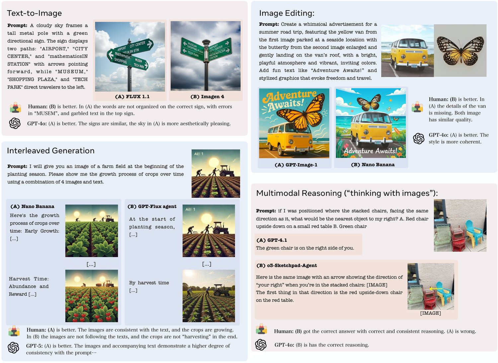
Reward models are central to the development of LLMs (Christiano et al., 2017; Bai et al., 2022; Jaech et al., 2024; Guo et al., 2025; Lambert et al., 2024; Yuan et al., 2024). They enable scalable evaluation that tracks model performance and surfaces systematic weaknesses (Zheng et al., 2023). They can be used to assess data quality, which is crucial for building synthetic data pipelines (Wang et al., 2022b). And, as reinforcement learning becomes increasingly important in post training, high quality reward models are crucial for surfacing or suppressing a range of different model capabilities (Christiano et al., 2017; Wu et al., 2023c; Guo et al., 2025). Recent work has focused on developing new classes of omni models, which enable understanding, generation, and reasoning with interleaved text and images (OpenAI, 2024; Chameleon Team, 2024; Ge et al., 2025; Zhou et al., 2024; Deng et al., 2025; Chen et al., 2025c; Wang et al., 2024b; Chen et al., 2025a; Google DeepMind, 2025a). However, reward modeling for omni models remains largely unexplored.
This omission is at least in part because there is no existing benchmark for omni reward models, making it nearly impossible to measure model quality. Unlike text-only models, omni models can generate and understand any number of texts and images together in a single arbitrarily ordered sequence. This generality creates unique challenges for reward modeling. Unlike domains such as math or coding, images are difficult to verify automatically (Hessel et al., 2021; Hu et al., 2023; Lin et al., 2024), and high-quality preference data requires carefully designed annotation protocols (Liang et al., 2024). Omni models can also be used for a very broad range of real-world applications, demanding diverse task coverage for both training and evaluation (Liu et al., 2024; Chen et al., 2024; Yao et al., 2025). Finally, gathering high-quality responses needed to train and evaluate omni reward models can be challenging, since omni model capabilities are not always as strong as the models used to develop previous text-only reward benches.
We introduce Multimodal RewardBench 2 (MMRB2) which overcomes all of these challenges to establish a foundation for future research on omni reward modeling. MMRB2 follows Multimodal RewardBench (MMRB1) (Yasunaga et al., 2025), which covered image-text-to-text tasks for multimodal large language models (MLLMs). MMRB2 instead covers the much more challenging case of omni models over four subtasks (Figure 1): text-to-image, image editing, interleaved generation, and multimodal reasoning (“thinking with images” (OpenAI, 2025d)). Each subtask contains 1,000 expert-annotated preference pairs, consisting of a task prompt, a preferred response, and a rejected response. To ensure that MMRB2 is comprehensive, reliable, and highly predictive of reward model quality, we design it with three key characteristics: (1) diverse, practical, yet challenging prompts near the capability boundary of frontier models, drawn from 21 existing and newly created tasks; (2) responses generated by state-of-the-art multimodal models, ranging from SD3.5 (Stability AI, 2024) to GPT-Image (OpenAI, 2025c) and Gemini 2.5 Flash Image (Google DeepMind, 2025a), along with specialized agents (Hu et al., 2024) for interleaved generation and visual reasoning tasks where even the best models often fail; and (3) preference pairs that have ¿90% agreement among human experts but which remain challenging for current judges (both MLLM-based judges and trained reward models), curated via an ensemble filtering strategy. A summary of all the prompts and multimodal models covered in MMRB2 are in Table 1.
Category
Source
Response
Models
Task Description
Text-to-Image
WISE (Niu et al., 2025)
EvalMuse (Han et al., 2024)
OneIG-Bench (Chang et al., 2025)
R2IBench (Chen et al., 2025b)
RealUnify (Shi et al., 2025)
Image
Gemini 2.0 and 2.5 Flash Image (Google DeepMind, 2025c; Google DeepMind, 2025a)
Imagen 3 (Baldridge et al., 2024)
Imagen 4 and Ultra (Google DeepMind, 2025d)
FLUX (Labs et al., 2025)
GPT-image-1 (OpenAI, 2025c)
SD 3.5-L (Stability AI, 2024)
Image generation from text assessing creativity, composition, reasoning, text rendering, etc.
Image Editing
DreamBench (Peng et al., 2025)
Emu-Edit (Sheynin et al., 2024)
HQ-Edit (Hui et al., 2024)
RISE-Bench (Zhao et al., 2025)
Text-heavy edit
Multi-Image edit
Image
Gemini-2.0 and 2.5 Flash Image (Google DeepMind, 2025c; Google DeepMind, 2025a)
Imagen3-Edit (Baldridge et al., 2024)
FLUX-Kontext (Labs et al., 2025)
GPT-image-1 (OpenAI, 2025c)
Object replacement, scene modification, style change, entity-preserving editing, reasoning-heavy editing, text-heavy editing, multi-image editing, etc.
Interleaved Generation
Chameleon (Chameleon Team, 2024)
Interleaved-Eval (Liu et al., 2024)
ISG-Bench (Chen et al., 2024)
MMMG (Yao et al., 2025)
Text+Image
Gemini 2.0 and 2.5 Flash Image (Google DeepMind, 2025c; Google DeepMind, 2025a)
Agents:
GPT-Gemini-agent
GPT-GPT-image-agent
GPT-Imagen-agent
GPT-FLUX-agent
Interleaved text-image generation, storytelling, open-ended visual question answering, scene composition, 3D prediction, temporal prediction, etc.
Reasoning
BLINK (Fu et al., 2024)
MindCube (Yin et al., 2025)
VisuLogic (Xu et al., 2025)
V∗ (Wu and Xie, 2023)
MuirBench (Wang et al., 2024a)
RealUnify (Shi et al., 2025)
Text(+Image)
GPT-5 (OpenAI, 2025b)
GPT-4.1 (OpenAI, 2025a)
GPT-4o (OpenAI, 2024)
o3 (OpenAI, 2025d)
Gemini 2.5 Flash (Gemini Team, 2025)
Gemini 2.5 Pro (Gemini Team, 2025)
Sketchpad Agents (Hu et al., 2024):
o3-sketchpad-agent
GPT-5-sketchpad-agent
Thinking with images, spatial reasoning, multi-image reasoning, perception-heavy tasks, etc.
Using MMRB2, we conduct a comprehensive study of reward models for multimodal understanding and generation, including multimodal LLM-as-a-judge, task-specific metrics, and reward models trained with human preferences. Experiments show that:
MMRB2 poses significant challenges to current MLLM-as-a-judge approaches: the latest Gemini 3 Pro (Google DeepMind, 2025b) reaches 74-80% accuracy across all subtasks. GPT-5 (OpenAI, 2025b) and Gemini 2.5 Pro (Gemini Team, 2025) achieve only moderate performance (66-75% accuracy across all subtasks) compared to ¿90% for humans. The best open-source model, Qwen3-VL-32B (Qwen Team, 2025), achieves 55%-69% accuracy. Notably, GPT-4o (OpenAI, 2024), which is commonly used as an evaluator in existing benchmarks, attains only 51-65% accuracy, suggesting that it is no longer suitable for evaluating frontier multimodal models, especially on reasoning-heavy tasks.
We study task-specific metrics (e.g., VQAScore (Lin et al., 2024)) and reward models trained on human preferences (e.g., ImageReward (Xu et al., 2023), UnifiedReward (Wang et al., 2025b)), and find that they are no longer reliable on the challenging prompts and frontier models in MMRB2. For instance, VQAScore (with Qwen2.5-VL backbone) and ImageReward achieve 58.3% and 54.0% on text-to-image evaluation, respectively, well below MLLM-as-a-judge baselines such as Qwen3-VL-32B (64.1%) and Gemini 3 Pro (74.4%). While human preference training improves performance over heuristic metrics, these models still fall short of frontier MLLMs.
We show that performance on MMRB2 strongly correlates with performance on GenAI-Bench (Li et al., 2024), GEdit-Bench (Liu et al., 2025), ISGBench (Chen et al., 2024), and EMMA (Hao et al., 2025) when using different reward models for best-of- selection, suggesting that MMRB2 is a good proxy for downstream effectiveness.
Further analysis of test-time scaling and fine-grained error patterns reveals substantial remaining headroom for omni model reward modeling and highlights concrete failure modes that future methods should address. Judges show notably higher agreement with human preferences on different-model pairs than on same-model pairs, with differences of up to 12%. Moreover, in multimodal reasoning tasks, judges exhibit a strong bias toward responses that include images, with performance gaps of 27.7–49.3% between pairs where annotators preferred image-containing responses and those where the preferred response contained only text.
Overall, MMRB2 establishes a challenging and informative benchmark that we hope will serve as a foundation for future research on omni model reward modeling, evaluation, and post-training.
Reward modeling for visual generation. Building on RLHF, reward modeling has been extended beyond text. ImageReward (Xu et al., 2023), HPSv2 and v3 (Wu et al., 2023b; Ma et al., 2025), PickScore (Kirstain et al., 2023) learn human preferences for text-to-image generation, improving correlation with human judgments and guiding diffusion models beyond CLIP-based proxies. For image editing, EditScore (Luo et al., 2025) and EditReward (Wu et al., 2025) adopt similar preference-learning frameworks. Unified approaches aim for cross-task generalization: Wang et al. (2025b) train a single multimodal reward across image, video, and understanding tasks. Despite progress, most multimodal RMs remain task-specific and lack a unified, stress-testing evaluation.
Evaluating reward models. Benchmarking reward models has become an active research direction. In the text domain, RewardBench and RewardBench 2 (Lambert et al., 2025; Malik et al., 2025) systematically compare LLM reward functions across diverse axes (e.g., instruction following, reasoning, safety). VL-RewardBench (Li et al., 2025) and Multimodal RewardBench (Yasunaga et al., 2025) assess reward models for multimodal LLM. Llava-Critic series (Xiong et al., 2025; Wang et al., 2025a) focus on developing reward models for these reward benchmarks. EvalPlanner (Saha et al., 2025) and J1 (Whitehouse et al., 2025) further improve reward modeling by incentivizing test-time scaling in LLM-as-a-judge. However, existing benchmarks and judge training efforts still largely focus on image-text-to-text tasks. For image generation, researchers develop automatic evaluation metrics for text-to-image generation. CLIPScore (Hessel et al., 2021) offers a reference-free image–text similarity measure that correlates with human judgments but often misses compositional errors; TIFA (Hu et al., 2023), DSG (Cho et al., 2024), and VQAScore (Lin et al., 2024) address this by probing alignment via VQA, improving robustness on compositional cases. OmniVerifier (Zhang et al., 2025) further investigate on training better visual-outcome verification mdiirhtdkltrnlldrnvhbccugtflukgivodels. The human annotations collected in these works are often used as reward model evaluations. Most existing reward model evaluations focus either on text or text-to-image generation, offering little insight into interleaved text and image. To bridge this gap, Multimodal RewardBench 2 (MMRB2) provides a unified and challenging framework for assess reward modeling for omni models.
MMRB2 (Figure 3) is a comprehensive omni reward model evaluation benchmark spanning a range of tasks (§3.1) of four types: text-to-image generation, image editing, interleaved generation, and multimodal reasoning. Each datapoint in MMRB2 contains a task prompt (§3.2) and two model responses, chosen and rejected (§3.3). Reward models are evaluated based on their agreement with human annotators (§3.4).
Task 1. Text-to-Image. Text-to-image generation provides natural language prompts for which generators produce candidate images. Reward models see the prompt and the candidate images, and must prefer the human-preferred image based on factors such as object composition, spatial relationships, attribute binding, text rendering, and adherence to complex multi-object instructions.
Task 2. Image Editing. Image editing provides 1-3 input images and a textual edit instruction, along with candidate edited images from generators. Reward models must select the edit that best matches human preference, balancing faithfulness to the edit request with preservation of irrelevant regions. The edits include both single-image operations (e.g., changing attributes, scene modifications, adding/removing elements) and multi-image compositions where multiple inputs must be integrated.
Task 3. Interleaved Generation. Interleaved generation provides multimodal prompts that elicit mixed image–text sequences from generators (e.g., for storytelling, how-to guides, educational content, or multi-step reasoning). Reward models are asked to rank candidate interleaved outputs, capturing human preferences for coherence, global planning, and effective coordination between visual and textual content.
Task 4. Multimodal Reasoning (Thinking with images). Multimodal reasoning provides complex problems that require visual understanding, logical inference, and multi-step problem solving. Generators may produce both text and intermediate thinking or sketchpad images; reward models must judge which candidate reasoning trajectory and final answer better aligns with human preference, emphasizing accurate perception, spatial reasoning, and clear explanation.
See Figure 1 for examples of multimodal preference pairs in MMRB2 across these four subtasks.
For each task, we sample prompts from existing benchmarks via stratified sampling over difficulty and subtask type, using only test splits to avoid train–test leakage. We additionally design new, practical tasks (e.g., multi-image editing) that are not covered in prior benchmarks. Benchmarks are weighted by coverage and difficulty, yielding 1,000 prompts per task. For each prompt, we generate multiple responses from 7–11 state-of-the-art models, including both API and open-source systems. We observe that even strong models such as Gemini 2.5 Flash Image struggle on interleaved generation and multimodal reasoning; for such cases, we further construct agents that can call Python and image generation/editing tools (Hu et al., 2024). Table 1 summarizes prompt sources and candidate models, with additional details in Appendix C.
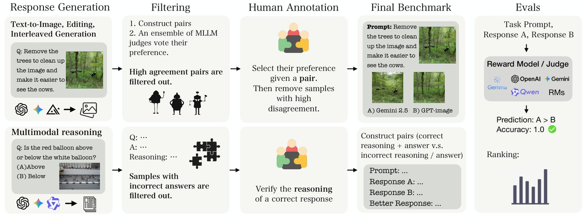
Given prompts and responses, we developed methods to gather human preferences for each task type.
We adopt a unified annotation protocol to ensure consistency across text-to-image generation, image editing, and interleaved generation tasks.
Ensemble filtering. To focus human annotation on the most informative comparisons, we first apply an ensemble filtering pipeline that removes easy preference pairs where one response is almost unanimously preferred. We collect judgments from nine multimodal judges spanning API models (GPT-5, GPT-4.1, GPT-4o, Gemini 2.5 Flash, Gemini 2.5 Pro) and open-source VL models (Gemma-3-27B/12B/4B, Qwen-2.5-VL-7B), covering a wide range of capability. Each judge evaluates every pair twice, once in forward order (A vs. B) and once in reverse order (B vs. A), to mitigate position bias (see Appendix C for the exact prompts).
We define easy pairs as those where the majority label appears in at least 90% of all judge evaluations across both orderings, and discard them because they provide little signal about fine-grained differences between reward models. While ensemble filtering can in principle introduce bias, the diversity of the judges and the high 90% threshold restrict filtering to near-trivial cases and mitigate systematic bias from any single model.
Human Preference Annotation. We employed professional annotators via the Surge AI platform to collect high-quality human preferences.11 1 Annotators were compensated at an hourly rate of $85. Each pair is independently evaluated by three annotators who have no knowledge of which model generated each response. Annotators assess each response using a comprehensive evaluation framework with different criteria tailored to each task category. Finally for each pair, annotators provide their overall preference for answer A vs B on a 7-point Likert scale where we convert these ratings to preferences. See details in Appendix C. We implement several additional quality control measures. First, we filter out annotations with high inter-annotator disagreement, specifically removing pairs where the rating spread (maximum rating minus minimum rating) exceeds 4 points on the 7-point scale. We also exclude ambiguous annotations where the average rating falls too close to the scale midpoint (within the 3.0-4.0 range), as these indicate genuine uncertainty rather than clear preferences from human annotations. Finally, we remove pairs where the majority vote results in a tie, as these provide limited signal for evaluating judge agreement.
For the three generative tasks, we collected approximately 17,700 human preference judgments, each evaluated by three independent annotators, resulting in 5900 judgments overall. After filtering, we retain 1,000 pairs per task (approximately 50% of the initial set). Inter-annotator agreement on these filtered pairs is high: 95.6% overall (excluding ties), with task-specific rates of 95.3% for image generation, 96.3% for image editing, and 95.2% for interleaved generation.
Because multimodal reasoning prompts have ground truth answers, we collect human annotations per model response (rather than pairwise) then construct pairs.
Human annotation. We filter generated model responses from §3.2 to those that contain both the correct answer to the prompt and some form of reasoning. We then balance samples across responses that include text-only reasoning and those that reason with both images and text. We collect three human annotations per response that indicate whether the reasoning contained in the model response is correct. The annotator instructions are listed in Appendix B.2.
Pair construction. With the annotated responses, we construct preference pairs. For the human-preferred sample of each pair, we select model responses in which all three human annotators agree that the reasoning contains no major errors and the model answer is correct. For the non-preferred sample of each pair, we utilize two kinds of responses: Correct answer, incorrect reasoning, where the model answer is correct but all three annotators consider the reasoning to contain major errors, and Incorrect answer, with reasoning, where the model answer is incorrect and some form of reasoning is included. For each pair, the two model responses may share the same modality (both text-only or both image+text) or be a combination. No model response is duplicated across pairs. For more details, see Appendix B.2.
Finally, we use the preference pairs to evaluate reward models on MMRB2.
Positional consistent dual evaluation Position bias is common problem; models have a systematic preference for the first item in a pair (Min et al., 2022; Tan et al., 2025). To mitigate this, each pair is evaluated twice per judge: once in its original order (A vs. B) and once with responses swapped (B vs. A). Both forward and reverse judgments are retained as independent data points, doubling judge-human comparison instances. This protocol improves agreement statistics by increasing sample size and penalizes judges with high position bias.
Judge-Human Agreement Computation We measure judge-human agreement by comparing each judge evaluation against the human preference for the corresponding pair. Human preference is determined by majority vote across three annotators for Tasks 1-3 and unanimous agreement of reasoning and answer correctness in Task 4. For each judge evaluation (whether forward or reverse), we compute a binary agreement score: 1.0 if the judge’s preference matches the human preference (including tie-to-tie matches), and 0.0 otherwise.
We conduct a comprehensive study of omni reward modeling with MMRB2 along a number of dimensions: evaluation of MLLM-as-a-judge (§4.1), evaluation of other task-specific evaluators (§4.2), and in-depth analysis on various aspects of the benchmark and omni model reward modeling (§4.3 - 4.5).
| Judge |
|
|
|
|
Avg. | ||||||||
|---|---|---|---|---|---|---|---|---|---|---|---|---|---|
| Open-source multimodal LLMs | |||||||||||||
| Gemma 3 4B (Gemma Team et al., 2025) | 51.7 | 51.0 | 51.3 | 48.8 | 50.7 | ||||||||
| Gemma 3 12B (Gemma Team et al., 2025) | 56.0 | 58.0 | 58.0 | 49.3 | 55.3 | ||||||||
| Gemma 3 27B (Gemma Team et al., 2025) | 58.3 | 60.2 | 61.1 | 49.4 | 57.3 | ||||||||
| Qwen2.5-VL-7B (Bai et al., 2025) | 50.4 | 57.1 | 48.4 | 47.5 | 50.9 | ||||||||
| Qwen2.5-VL-72B (Bai et al., 2025) | 59.1 | 64.6 | 62.3 | 50.0 | 59.0 | ||||||||
| Qwen3-VL-8B (Qwen Team, 2025) | 59.4 | 61.7 | 61.5 | 54.6 | 59.3 | ||||||||
| Qwen3-VL-32B (Qwen Team, 2025) | 64.1 | 67.3 | 70.5 | 56.6 | 64.6 | ||||||||
| Qwen3-VL-30BA3B (Qwen Team, 2025) | 60.0 | 59.5 | 57.3 | 57.3 | 58.5 | ||||||||
| Qwen3-VL-235BA22B (Qwen Team, 2025) | 62.0 | 64.8 | 69.0 | 55.9 | 62.9 | ||||||||
| API-based Models | |||||||||||||
| GPT-4o (OpenAI, 2024) | 60.3 | 65.0 | 61.5 | 51.9 | 59.7 | ||||||||
| GPT-4.1 (OpenAI, 2025a) | 65.8 | 68.2 | 67.0 | 53.0 | 63.5 | ||||||||
| GPT-5 (OpenAI, 2025b) | 70.5 | 73.8 | 74.4 | 70.2 | 72.2 | ||||||||
| Gemini 2.5 Flash (Gemini Team, 2025) | 63.1 | 66.5 | 69.4 | 57.5 | 64.1 | ||||||||
| Gemini 2.5 Pro (Gemini Team, 2025) | 70.5 | 71.3 | 75.1 | 66.6 | 70.9 | ||||||||
| Gemini 3 Pro (Google DeepMind, 2025b) | 74.4 | 74.9 | 76.4 | 79.5 | 76.3 | ||||||||
Setup. We evaluate all tasks on API-based models GPT-4o, GPT-4.1, GPT-5, Gemini 2.5 Flash, Gemini 2.5 Pro, Gemini 3 Pro and open-source models Qwen 2.5-VL (7B and 72B) (Bai et al., 2025), Qwen 3-VL (8B, 32B, 30BA3B, 235BA22B) (Qwen Team, 2025) and Gemma 3 (4B, 12B, and 27B) (Gemma Team et al., 2025). For each task type, we design task-specific evaluation prompts with detailed rubrics (see Appendix C). We follow the positional consistent dual evaluation method in §3.4 to mitigate positional bias.
Results. Table 2 reveals substantial variation in judge-human agreement across models and tasks. API-based models generally outperform open-source alternatives, with Gemini 3 Pro achieving the strongest overall performance across all tasks. GPT-5 and Gemini 2.5 Pro also achieves decent accuracy on text-to-image generation, image editing, and interleaved generation (70 - 75% accuracy). Notably, multimodal reasoning proves to be the most challenging task across all models except Gemini 3 Pro, with even top API models achieving only 52-70% agreement on reasoning tasks (compared to 63-75% on multimodal generation tasks). This difficulty may stem from multiple valid solution paths, varying levels of explanation detail that humans may value differently, or the challenge of assessing both correctness and reasoning quality simultaneously.
Gemma 3, Qwen2.5-VL, and Qwen3-VL families of models all perform better on MMRB2 as number of parameters scales. Additionally, the performance gap between API-based and open-source models has narrowed with recent open-source advances. The top API models (Gemini 3 Pro, Gemini 2.5 Pro, GPT-5) achieve agreement rates of 65-80% across most tasks, while the best open-source models now reach competitive performance levels. Qwen3-VL-32B is the strongest open-source model, achieving 64.1-70.5% across tasks. Notably, its 70.5% agreement rate for interleaved generation approaches API-based model performance. While the Qwen3-VL series generally outperforms the Gemma 3 and Qwen2.5 families on image-related tasks, even some of the Gemma 3 and Qwen2.5 variants are within a few percentage points of API-based models. However, open-source models still show large gaps with API-based models on multimodal reasoning: the strongest, Qwen3-VL 30BA3B at 57.3%, trails Gemini 3 Pro by 22 percentage points.
| Judge | Text to Image | Image Editing* | Multimodal Reasoning* |
|---|---|---|---|
| MLLM-as-a-judge | |||
| Qwen2.5-VL-7B (Bai et al., 2025) | 50.4 | 57.8 | 53.7 |
| Qwen3-VL-32B (Qwen Team, 2025) | 64.1 | 66.4 | 69.9 |
| GPT-5 (OpenAI, 2025b) | 70.5 | 74.3 | 83.8 |
| CLIP-based evaluators | |||
| CLIPScore (Hessel et al., 2021) | 51.0 | - | - |
| ImageReward (Xu et al., 2023) | 54.0 | - | - |
| HPSv2 (Wu et al., 2023a) | 54.7 | - | - |
| PickScore (Kirstain et al., 2023) | 58.6 | - | - |
| Qwen2.5-VL-7B-based evaluators | |||
| VQAScore (Lin et al., 2024) | 58.3 | - | - |
| HPSv3 (Ma et al., 2025) | 60.2 | - | - |
| EditReward (Wu et al., 2025) | - | 67.2 | - |
| UnifiedReward (Wang et al., 2025b) | 59.8 | - | 55.1 |
Besides directly prompting MLLMs to act as judges, prior work has proposed a range of automatic metrics and preference-trained reward models targeting the tasks in MMRB2. We evaluate these methods on the three MMRB2 tasks—text-to-image generation, image editing, and multimodal reasoning. To the best of our knowledge, there are currently no evaluators specifically tailored for interleaved text–image outputs.
Setup. Unless otherwise noted, we adopt the default metaprompt provided by each official library. For text-to-image, we consider two families of evaluators. The first is CLIP-based (Radford et al., 2021), including CLIPScore (Hessel et al., 2021) and its preference-trained variants ImageReward (Xu et al., 2023), HPSv2 (Wu et al., 2023a), and PickScore (Kirstain et al., 2023). The second family is based on Qwen2.5-VL-7B (Bai et al., 2025). We evaluate VQAScore (Lin et al., 2024), which scores generated images using model logits, as well as the preference-trained reward models HPSv3 (Ma et al., 2025) and UnifiedReward (Wang et al., 2025b). We evaluate all of the above models on the MMRB2 text-to-image task. Qwen2.5-VL-7B has also been used as the backbone for reward models on other tasks, including EditReward (Wu et al., 2025) for image editing and UnifiedReward (Wang et al., 2025b) for multimodal understanding. Because EditReward is trained only on single-image editing, and UnifiedReward is trained on single-image image-to-text tasks, we evaluate them on the corresponding single-image subsets of MMRB2 to ensure a fair comparison among evaluators. Table 3 summarizes the results.
Preference training substantially improves reward-model accuracy. Several reward models share the same base architecture as our MLLM baselines (e.g., EditReward, UnifiedReward, and HPSv3 are based on Qwen2.5-VL-7B), and some are CLIP-based (ImageReward, HPSv2, PickScore). Relative to the Qwen2.5-VL-7B judge, EditReward yields a +9.4% gain on editing (57.8 67.2), and UnifiedReward improves text-to-image by +9.4% (50.4 59.8) and reasoning by +1.4% (53.7 55.1). Similarly, compared to CLIPScore (51.0), CLIP-based preference models show consistent gains: ImageReward 54.0 (+3.0 %), HPSv2 54.7 (+3.7 %), and PickScore 58.6 (+7.6 %). These results indicate that training with human preferences is an effective way to boost evaluator performance on multimodal tasks.
Reward models can be out-of-distribution; strong MLLMs remain strong judges. Despite the above gains, most preference-trained reward models still underperform a larger open-source judge such as Qwen3-VL-32B across tasks; a notable exception is EditReward, which is competitive on editing (67.2 vs. 66.4). One plausible explanation is a distribution shift: several reward models were trained on data from earlier-generation systems (e.g., SD 2.1–era), and their accuracy diminishes when judging outputs from more capable, recent models. Overall, newer reward models (HPSv3, EditReward, UnifiedReward) are far better than older ones, yet stronger MLLM still set a high bar through simple prompting.
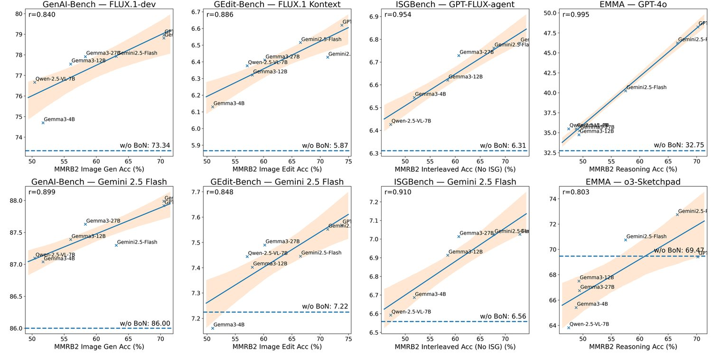
A key research question is whether MMRB2 performance can predict downstream task performance. To address this question, following prior works (Lightman et al., 2023; Li et al., 2025), we conduct best-of-N sampling with different rewards. We experiment with 4 tasks: GenAI-Bench (Li et al., 2024), GEdit-Bench (Liu et al., 2025), ISG-Bench (Chen et al., 2024), and EMMA (Hao et al., 2025), each corresponds to one task in MMRB2. For each query, we generate candidate responses from two base models, one strong model and a weaker one, and we use 7 different MLLM-as-a-judge to select the best one via knockout tournaments. Then we evaluate the selected response with each task’s metrics.
Figure 4 shows all the results. The x-axis is the MMRB2 performance, and Y-axis is the score of the best-of-N response selected by different rewards. We exclude GPT-4o and 4.1 because they are often used as evaluators. For interleaved generation, we remove ISGBench preference pairs when computing MMRB2 scores to avoid leakage. The results show that there is a strong correlation between best-of-N performance and MMRB2 scores. A good reward model can give great gains on downstream performance, even with the simple best-of-N sampling. For example, FLUX’s GenAI-Bench score improved from 73% to 79%, and GPT-4o’s accuracy on EMMA improved from 32% to 45%, when using GPT-5 as best-of-N selector. We can still see consistent gains even for strong base models like Gemini 2.5 Flash Image and o3-Sketchpad. The strong correlation (¿0.8 Pearson’s for all tasks and models) between MMRB2 and downstream task performance validates that MMRB2 is a good proxy for downstream effectiveness.
Same-model pairs vs. different-model pairs. Our benchmark contains 57.4% same-model pairs (comparing two outputs from the same model) and 42.6% different-model pairs (comparing outputs from different models), allowing us to assess judge performance across both scenarios. See results in Table 4.
| Task | Judge | Overall (%) | Same-M (%) | Diff-M (%) |
|---|---|---|---|---|
| Image Generation | Gemini 3 Pro | 74.4 | 70.4 | 79.7 |
| Gemini 2.5 Pro | 70.5 | 68.4 | 73.4 | |
| GPT-5 | 70.5 | 66.8 | 75.6 | |
| GPT-4.1 | 65.8 | 61.6 | 71.4 | |
| Qwen3-VL-32B | 64.1 | 59.1 | 71.0 | |
| Image Editing | Gemini 3 Pro | 74.9 | 71.0 | 79.3 |
| GPT-5 | 73.8 | 71.7 | 76.2 | |
| Gemini 2.5 Pro | 71.3 | 66.7 | 76.6 | |
| GPT-4.1 | 68.2 | 65.6 | 71.3 | |
| Qwen3-VL-32B | 67.3 | 64.5 | 70.5 | |
| Interleaved | Gemini 3 Pro | 76.4 | 72.8 | 82.0 |
| Gemini 2.5 Pro | 75.1 | 70.7 | 81.9 | |
| GPT-5 | 74.4 | 69.4 | 82.1 | |
| Qwen3-VL-32B | 70.5 | 66.7 | 76.4 | |
| Gemini 2.5 Flash | 69.4 | 65.0 | 76.3 | |
| Reasoning | Gemini 3 Pro | 79.5 | 78.7 | 79.8 |
| GPT-5 | 70.2 | 68.4 | 70.8 | |
| Gemini 2.5 Pro | 66.6 | 70.5 | 65.4 | |
| Gemini 2.5 Flash | 57.5 | 59.9 | 56.7 | |
| Qwen3-VL-30BA3B | 57.3 | 57.4 | 57.3 |
Across the image generation, editing, and interleaving tasks, we observe a consistent pattern for all judges: judges achieve higher agreement with human on different-model pairs compared to same-model pairs. For the best-performing judges, this gap ranges from 5-13 percentage points. For example, on image generation, Gemini 3 Pro achieves 79.7% agreement on different-model pairs but only 70.4% on same-model pairs (9.3 point gap). This pattern holds across tasks: same-model pairs demand fine-grained judgments within one model’s outputs, while different-model pairs reveal larger gaps rooted in capability differences.
Same-modality pairs vs mixed-modality pairs. For the multimodal reasoning task, we study how judges perform differentially for pairs constructed with responses from the same modality (e.g., text response vs. text response) versus mixed modalities (e.g., text response vs. text-image response). Full results are reported in Table 5.
|
|
|
| |||||||||||||||||||||
| Model |
|
|
|
|
|
|
|
| ||||||||||||||||
| Open-source models | ||||||||||||||||||||||||
| Gemma3 4B | 47.39 | 50.63 | 50.00 | 48.32 | 63.64 | 57.00 | 38.68 | 36.00 | ||||||||||||||||
| Gemma3 12B | 49.57 | 51.47 | 54.02 | 52.10 | 81.82 | 73.50 | 15.09 | 11.50 | ||||||||||||||||
| Gemma3 27B | 51.30 | 50.21 | 51.79 | 51.68 | 87.50 | 79.50 | 10.38 | 10.50 | ||||||||||||||||
| Qwen2.5-VL-7B | 49.12 | 48.10 | 51.34 | 50.00 | 52.27 | 39.00 | 47.17 | 40.31 | ||||||||||||||||
| Qwen2.5-VL-72B | 52.63 | 48.10 | 53.57 | 54.41 | 78.41 | 68.00 | 16.04 | 23.98 | ||||||||||||||||
| Qwen3-VL-8B | 57.46 | 52.53 | 58.48 | 54.20 | 71.59 | 73.00 | 34.91 | 36.73 | ||||||||||||||||
| Qwen3-VL-32B | 62.28 | 54.43 | 60.71 | 56.93 | 78.41 | 80.00 | 25.47 | 33.16 | ||||||||||||||||
| Qwen3-VL-30BA3B | 58.77 | 55.72 | 57.59 | 56.30 | 75.00 | 78.00 | 36.79 | 43.37 | ||||||||||||||||
| Qwen3-VL-235BA22B | 58.11 | 57.02 | 55.80 | 57.14 | 85.23 | 81.96 | 23.58 | 26.02 | ||||||||||||||||
| API-based models | ||||||||||||||||||||||||
| GPT-4o | 50.43 | 50.42 | 55.80 | 56.51 | 81.82 | 80.00 | 18.87 | 18.00 | ||||||||||||||||
| GPT-4.1 | 56.09 | 50.42 | 58.04 | 58.61 | 93.18 | 81.50 | 10.38 | 13.50 | ||||||||||||||||
| GPT-5 | 69.57 | 67.02 | 75.89 | 80.25 | 88.64 | 88.00 | 36.79 | 40.00 | ||||||||||||||||
| Gemini 2.5 Flash | 60.53 | 58.47 | 56.25 | 59.03 | 86.36 | 76.00 | 16.98 | 38.42 | ||||||||||||||||
| Gemini 2.5 Pro | 73.91 | 66.18 | 62.95 | 65.55 | 84.09 | 79.00 | 43.40 | 58.00 | ||||||||||||||||
| Gemini 3 Pro | 71.88 | 84.75 | 75.45 | 82.49 | 84.88 | 87.00 | 66.98 | 72.00 | ||||||||||||||||
We find that for mixed-modal pairs, all judges exhibit a strong bias towards the response that contains images. This is true even of the highest performing models: the accuracy of GPT-5 for mixed-modal pairs when the preferred response contains an image is 49.3 points higher than pairs where the preferred response contains text (88.2% vs. 38.9%), and Gemini 2.5 Pro and Qwen3-VL-30BA3B have gaps of 27.7 and 36.0 points respectively. Gemini 3 Pro performs much better, but still has a 17.9 point gap. Additionally, we find that this trend holds for both pair types: those constructed with an incorrect response vs. a correct response and those with incorrect reasoning vs. correct reasoning.
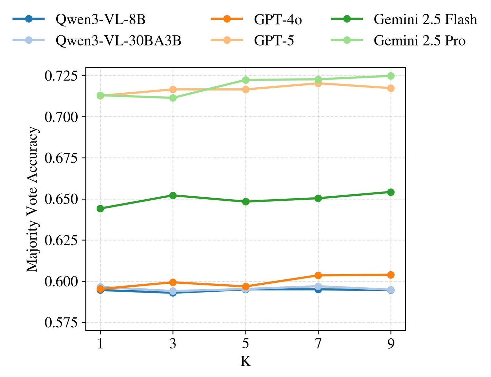
Prior work (Wang et al., 2022a; Brown et al., 2024) shows that test-time scaling can substantially improve LLM performance. We ask whether similar gains transfer to multimodal reward models. For each judge, we draw independent judgments and take a majority vote as the final decision. We report majority-vote accuracy averaged over the four MMRB2 tasks (300 examples per task) in Fig. 5.
The effects are model-dependent, echoing trends in prior observations (Li et al., 2025). Qwen3-VL models show no measurable improvement as increases. In contrast, GPT-4o, Gemini 2.5 Flash, GPT-5, and Gemini 2.5 Pro improve by roughly – at , with Gemini 2.5 Pro showing the largest gain (from to ). Overall, test-time scaling provides only modest returns for multimodal reward models compared with text-only LLMs, suggesting that alternative scaling methods are needed for multimodal rewards.
We introduce Multimodal RewardBench 2, the first comprehensive benchmark for omni reward models spanning four tasks: text-to-image, image editing, interleaved generation, and multimodal reasoning. Our analysis suggests that current omni reward models, particularly the latest Gemini 3 Pro, can serve as proxies for human evaluation on multimodal generation tasks, achieving 74-80% agreement. However, the substantial disagreement remaining (20-26%) indicates that human evaluation remains essential, , and that other models, including GPT-5, lag significantly behind Gemini 3 Pro. Overall, MMRB2 establishes a challenging and informative benchmark that we hope will serve as a foundation for future research on omni model reward modeling, evaluation, and post-training.
Limitations and future extensions. As the first comprehensive benchmark targeting omni reward models, MMRB2 focuses on core settings and overall human preferences in interleaved text–image scenarios. The construction pipeline is modular and can be extended to additional evaluation dimensions (e.g., safety- and bias-sensitive preferences), richer task formats (e.g., multilingual tasks, in-the-wild prompts, multi-turn and agentic interactions), and further modalities (e.g., video and audio). Further discussion is provided in Appendix D.
We would like to thank Mason Yu, Christophe Ropers, Nate Ekberg, Cynthia Gao, Justin Hovey, Jaimie Hsu, Samantha Snowden, and all annotators from Surge AI for their invaluable contributions to data annotation. We also thank Jonea Gordon and Vanessa Stark for their assistance with the approval process. Additionally, we are grateful to Mary Williamson, Xiaochuang Han, Adriana Romero Soriano, Michal Drozdzal, Xudong Wang, Michihiro Yasunaga, Ishan Misra, Amita Kamath, Inna Lin, and Karen Chen for their insightful discussions and support throughout this project.
Contents of Supplementary Material
The pairwise evaluation results presented in Tables 6, 7, 8, 9 distinct performance patterns across multimodal tasks and model capabilities.
Image Generation: Performance varies moderately across benchmarks, with realunify (48-78.5%) and oneigbench (73-74% for top models) showing higher judge agreement rates, while wise consistently yields the lowest scores across all models (47-66%).
Image Editing: The breakdown reveals stark differences in benchmark difficulty, with text-based editing benchmarks (text: 54-83%, risebench: 48-83%) showing significantly higher agreement rates compared to general editing tasks (emu-edit: 49-72%, multi-image editing: 51-71%). This pattern holds consistently across all judge models, indicating that text rendering or text-focused editing provides clearer discriminative signals for pairwise evaluation than open-ended creative edits.
Interleaved: Performance is relatively uniform across benchmarks for top models, with isgbench consistently scoring highest (76-79% for frontier models) and all benchmarks clustering within a 5-8 percentage point range for leading judges.
Reasoning: This task exhibits the most dramatic benchmark-level variance, with muirbench showing substantially higher scores (36-76%) compared to other benchmarks, while vstar proves exceptionally challenging (30-52%). The performance on blink and mindcube clusters tightly (44-55% for most models), suggesting these represent a baseline reasoning difficulty.
| Judge Model | Overall % | evalmuse | oneigbench | r2ibench | realunify | wise |
|---|---|---|---|---|---|---|
| (n=390) | (n=278) | (n=128) | (n=93) | (n=111) | ||
| Gemini 3 Pro | 74.4% | 74.5% | 74.5% | 72.7% | 80.1% | 71.2% |
| Gemini 2.5 Pro | 70.5% | 69.6% | 73.0% | 70.7% | 77.4% | 61.7% |
| GPT5 | 70.5% | 67.3% | 73.2% | 72.7% | 78.5% | 66.2% |
| GPT 4.1 | 65.8% | 62.4% | 69.6% | 66.8% | 75.8% | 58.6% |
| Qwen-3 vl32b | 64.1% | 63.3% | 68.3% | 60.9% | 65.6% | 59.0% |
| Gemini25flash | 63.1% | 60.3% | 64.4% | 62.1% | 75.3% | 60.8% |
| Qwen-3 vl235ba22b | 62.0% | 59.2% | 65.5% | 60.2% | 68.8% | 59.0% |
| GPT 4o | 60.3% | 58.1% | 65.5% | 59.4% | 65.1% | 52.3% |
| Qwen-3 vl30ba3b | 60.0% | 57.6% | 64.2% | 57.8% | 59.1% | 61.3% |
| Qwen-3 vl8b | 59.4% | 59.2% | 62.8% | 57.4% | 62.4% | 50.9% |
| Qwen25vl72b | 59.1% | 56.8% | 62.1% | 56.2% | 67.7% | 55.9% |
| Gemma 3-27b | 58.3% | 56.7% | 59.5% | 60.2% | 66.7% | 51.8% |
| Llama4-17b | 56.7% | 56.3% | 58.1% | 53.4% | 58.0% | 58.1% |
| Gemma 3-12b | 56.0% | 54.6% | 58.6% | 53.1% | 62.9% | 52.3% |
| Gemma 3-4b | 51.7% | 50.1% | 53.2% | 50.8% | 54.3% | 52.7% |
| Qwen25vl7b | 50.4% | 48.8% | 55.9% | 47.7% | 48.4% | 46.8% |
| Judge Model | Overall % | dreambench | emu-edit | hq-edit | multi-image editing | risebench | text |
|---|---|---|---|---|---|---|---|
| (n=242) | (n=329) | (n=53) | (n=178) | (n=84) | (n=114) | ||
| Gemini 3 Pro | 74.9% | 70.0% | 75.8% | 79.2% | 68.5% | 82.1% | 84.6% |
| GPT5 | 73.8% | 71.3% | 71.6% | 72.6% | 71.1% | 82.7% | 83.3% |
| Gemini 2.5 Pro | 71.3% | 70.2% | 68.4% | 76.0% | 64.9% | 79.8% | 83.3% |
| GPT 4.1 | 68.2% | 67.6% | 63.4% | 68.9% | 66.0% | 74.4% | 82.0% |
| Qwen-3 vl32b | 67.3% | 63.6% | 65.8% | 72.6% | 64.9% | 71.4% | 77.6% |
| Gemini25flash | 66.5% | 63.8% | 67.6% | 67.9% | 59.6% | 72.6% | 74.6% |
| Qwen-3 vl235ba22b | 66.0% | 66.7% | 64.1% | 67.0% | 57.9% | 72.0% | 77.6% |
| GPT 4o | 65.0% | 66.5% | 60.6% | 60.4% | 64.6% | 66.1% | 76.3% |
| Qwen25vl72b | 64.6% | 63.6% | 63.5% | 61.3% | 60.1% | 63.7% | 79.4% |
| Qwen-3 vl8b | 61.7% | 59.3% | 61.9% | 61.3% | 54.8% | 62.5% | 76.3% |
| Llama4-17b | 61.1% | 60.2% | 59.8% | 65.3% | 57.3% | 64.4% | 67.9% |
| Gemma 3-27b | 60.2% | 61.2% | 60.2% | 58.5% | 57.6% | 53.0% | 68.4% |
| Qwen-3 vl30ba3b | 59.5% | 58.1% | 58.5% | 59.4% | 56.5% | 61.9% | 68.4% |
| Gemma 3-12b | 58.0% | 58.9% | 55.0% | 56.6% | 57.6% | 60.7% | 64.0% |
| Qwen25vl7b | 57.1% | 59.5% | 53.8% | 57.5% | 53.7% | 52.4% | 70.2% |
| Gemma 3-4b | 51.0% | 53.3% | 49.1% | 49.1% | 51.4% | 47.6% | 54.4% |
| Judge Model | Overall % | chameleon | interleavedeval | isgbench | mmmg |
|---|---|---|---|---|---|
| (n=284) | (n=267) | (n=421) | (n=28) | ||
| Gemini 3 Pro | 76.4% | 76.4% | 76.8% | 76.1% | 76.8% |
| Gemini 2.5 Pro | 75.1% | 73.4% | 71.5% | 78.5% | 75.0% |
| GPT5 | 74.4% | 72.9% | 72.8% | 76.5% | 71.4% |
| Qwen-3 vl32b | 70.5% | 66.9% | 70.4% | 73.3% | 66.1% |
| Gemini25flash | 69.4% | 64.4% | 70.8% | 71.5% | 75.0% |
| GPT 4.1 | 67.0% | 65.3% | 66.3% | 69.1% | 60.7% |
| Qwen-3 vl235ba22b | 66.7% | 63.5% | 66.3% | 68.9% | 69.6% |
| Qwen25vl72b | 62.3% | 59.9% | 61.4% | 64.7% | 58.9% |
| GPT 4o | 61.5% | 60.9% | 60.1% | 63.3% | 53.6% |
| Qwen-3 vl8b | 61.5% | 59.3% | 63.7% | 61.3% | 66.1% |
| Gemma 3-27b | 61.1% | 59.9% | 59.4% | 62.4% | 69.6% |
| Gemma 3-12b | 58.0% | 57.6% | 58.1% | 58.2% | 58.9% |
| Qwen-3 vl30ba3b | 57.3% | 55.8% | 56.8% | 57.7% | 69.6% |
| Llama4-scout-17b | 54.4% | 55.7% | 54.9% | 52.5% | 66.7% |
| Gemma 3-4b | 51.3% | 50.4% | 52.8% | 51.1% | 50.0% |
| Qwen25vl7b | 48.4% | 48.4% | 46.4% | 49.8% | 48.2% |
| Judge Model | Overall % | blink | mindcube | muirbench | realunify | visulogic | vstar |
|---|---|---|---|---|---|---|---|
| (n=355) | (n=367) | (n=137) | (n=55) | (n=49) | (n=37) | ||
| Qwen-3 vl32b | 56.6% | 52.4% | 55.6% | 71.5% | 56.4% | 61.2% | 45.9% |
| Qwen-3 vl30ba3b | 56.5% | 54.6% | 52.9% | 70.3% | 56.9% | 62.1% | 51.1% |
| Qwen-3 vl235ba22b | 55.9% | 52.6% | 54.2% | 76.1% | 52.8% | 59.2% | 30.6% |
| Qwen-3 vl8b | 53.7% | 51.9% | 50.9% | 64.2% | 54.4% | 60.4% | 48.5% |
| Qwen25vl72b | 50.2% | 46.7% | 52.0% | 57.7% | 50.9% | 54.1% | 29.7% |
| Llama4-scout-17b | 44.5% | 43.5% | 47.7% | 35.8% | 49.1% | 44.9% | 48.6% |
We also report the generation capabilities of MLLMs as content producers (models generating the multimodal content being evaluated, reported in Table 10). Judging requires discriminative understanding and alignment with human preferences, while generation requires creative synthesis and technical execution. A model may excel at one role while underperforming at the other, as we observe in our results.
Table 10 presents the win rates of generative models across MMRB2’s three generation tasks (Tasks 1–3), where win rate is computed as comparisons based on human majority preferences. These are the same model outputs that judges evaluate in Table 2, allowing us to assess both generation quality and judgment accuracy within a unified framework.
Image Generation. GPT-Image-1 (60.4%) narrowly leads text-to-image generation, closely followed by Imagen 4 (57.4%), Imagen 4 Ultra (56.5%), and Gemini 2.5 Flash (54.3%), indicating a highly competitive landscape among top proprietary models with less than 6 points separating the leaders. Open-source models lag substantially: Stable Diffusion 3.5 Large (41.0%) and FLUX (36.8%) trail by 19–24 points.
Image Editing. Interestingly, general-purpose multimodal models such as Gemini 2.5 Flash (59.2%) and GPT-Image-1 (53.2%) outperform specialized models. While Imagen Edit achieves only a 35.2% win rate despite being purpose-built for editing, the gap is less severe than earlier reports suggested. FLUX-Kontext (49.0%) demonstrates competitive performance for an open-source solution, though it still trails the leaders. These results suggest that strong vision–language understanding provides significant advantages for instruction-based editing, even if specialized architectures are not entirely obsolete.
Interleaved Generation. Agent-based systems dominate, with GPT-Gemini Agent (57.1%) and GPT-Image Agent (56.9%) leading by narrow margins. Native multimodal models like Gemini 2.5 Flash (53.2%) perform competitively, narrowing the gap with agent architectures. GPT-FLUX Agent’s improved but still modest performance (40.4%) confirms that agent quality depends critically on component model quality, though the improvement suggests that better integration strategies can help.
| Rank | Task | Model | Win Rate (%) |
| 1 2 3 4 5 6 7 8 | Image Gen. | GPT-Image-1 | 60.4 |
| Imagen 4 | 57.4 | ||
| Imagen 4 Ultra | 56.5 | ||
| Gemini 2.5 Flash | 54.3 | ||
| Imagen 3 | 49.2 | ||
| Gemini 2.0 Flash | 45.6 | ||
| SD 3.5 Large | 41.0 | ||
| FLUX | 36.8 | ||
| 1 2 3 4 5 | Image Editing | Gemini 2.5 Flash | 59.2 |
| GPT-Image-1 | 53.2 | ||
| FLUX-Kontext | 49.0 | ||
| Gemini 2.0 Flash | 47.1 | ||
| Imagen Edit | 35.2 | ||
| 1 2 3 4 5 6 | Interleaved | GPT-Gemini Agent | 57.1 |
| GPT-Image Agent | 56.9 | ||
| Gemini 2.5 Flash | 53.2 | ||
| Gemini 2.0 Flash | 46.2 | ||
| GPT-Imagen Agent | 42.1 | ||
| GPT-FLUX Agent | 40.4 |
Figure 6 shows a sample of the annotation interface for the MMRB2 text-to-image task. In this section we provide additional details on the human annotation procedure.
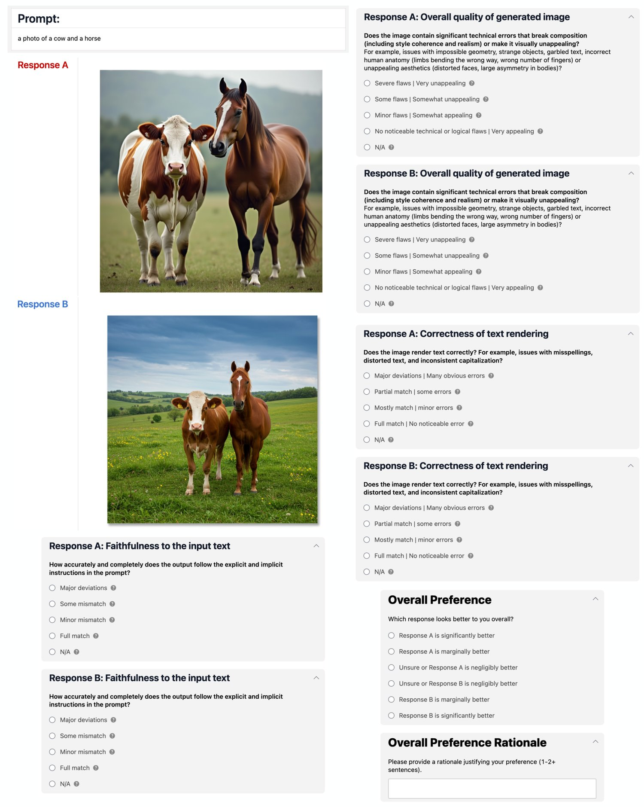
For each annotation task, we provide a prompt and two responses, A and B, and the goal is to assess the quality of each response and then rate them. Annotators answer the following questions:
Prompt Quality Check:
Indicate whether the prompt is correct (Yes/No).
Pointwise Evaluation for Response A and Response B:
For each response, rate the following dimensions on a 4-point scale (see Section B.1.1 for details):
Faithfulness to the text instruction
(Tasks 2 and 3) Faithfulness to the input image
Overall quality of the generated image
(Task 3 only) Cross-generation image congruence
(Task 3 only) Generated text-image alignment
(Task 3 only) Technical quality of generated text
(Conditional) Correctness of text rendering
Rationales:
Provide a brief rationale for the overall quality rating of both Response A and Response B.
Overall Preference:
Indicate your overall preference between Response A and Response B, choosing one of the following:
A is significantly better
A is marginally better
Unsure or A is negligibly better
Unsure or B is negligibly better
B is marginally better
B is significantly better
Rationale for Preference:
Provide a brief explanation for your overall preference.
(For all tasks) Faithfulness to the text instruction: How accurately and completely does the output follow the explicit and implicit text instructions in the prompt?
| Rating | Label | Description |
|---|---|---|
| 0 | Major deviations | Key elements are missing, altered, or contradicted |
| 1 | Some mismatch | Some key elements are missing or altered. |
| 2 | Minor mismatch | Most key elements are present, but others are missing, incorrect, or incomplete |
| 3 | Full match | All key elements are represented exactly as described, with no significant omissions or contradictions |
(For task 2 and 3) Faithfulness to the input image: When using an input image as context (e.g., editing, continuation, transformation), how well does the output incorporate the relevant elements of the input according to the instructions?
| Rating | Label | Description |
|---|---|---|
| 0 | Fails to use the input meaningfully | Key elements are ignored, misinterpreted, or contradicted |
| 1 | Partial mismatch to the input | Some elements are carried over or transformed correctly, but those are not key elements or important aspects |
| 2 | Minor mismatch to the input | Most relevant elements are carried over or transformed correctly, but a few aspects are missing or incorrectly handled |
| 3 | Uses input fully | All relevant elements from the input are accurately incorporated, extended, or transformed exactly as instructed |
(For all tasks) Overall quality of generated image: Does the image contain significant technical errors that break composition (including style coherence and realism) or make it visually unappealing? For example, issues with impossible geometry, strange objects, garbled text, incorrect human anatomy (limbs bending the wrong way, wrong number of fingers) or unappealing aesthetics (distorted faces, large asymmetry in bodies)?
| Rating | Label | Description |
|---|---|---|
| 0 | Severe flaws , Very unappealing | Obvious errors that strongly affect usability: Major physical or visual errors that most viewers would notice immediately, unbalanced composition, clashing colors, heavy jarringness |
| 1 | Some flaws, Somewhat unappealing | Some errors that noticeably disrupt the image and jeopardize its usability regardless: Clear physical or visual errors that most viewers would eventually notice, the image isn’t an eye sore but something is wrong with its overall composition or color balance |
| 2 | Minor flaws, Somewhat appealing | Small inaccuracies that are noticeable but are not strongly disruptive: Mostly plausible, but minor inconsistencies reduce believability, acceptable composition and color balance, but lacks artistic quality |
| 3 | No noticeable technical or logical flaws | Very appealing | The image is free of noticeable technical errors: Fully coherent and physically plausible (if photorealistic, could be mistaken for a real photo; if stylized, maintains internal logic), strong composition, harmonious colors, and captivating style |
(For task 3) Cross-generation image congruence: How well do the images relate to each other in a coherent way, maintaining consistency in recurring elements, style, and context, while allowing for appropriate variation when required?
| Rating | Label | Description |
|---|---|---|
| 0 | Very incoherent | Many recurring elements change in unrealistic or unexplained ways, significantly breaking visual or thematic coherence |
| 1 | Rather incoherent | Some recurring elements change in unrealistic or unexplained ways, breaking visual or thematic coherence |
| 2 | Mostly coherent | Most recurring elements match, but there are noticeable mismatches or shifts that reduce cohesion |
| 3 | Full coherence | Recurring elements, style, and context remain consistent where appropriate, and variations are clearly intentional and coherent |
(For task 3) Generated Text-image alignment: How well does the generated text align with the visual content of the image(s), without contradictions or unsupported details?
| Rating | Label | Description |
|---|---|---|
| 0 | Very inconsistent | Text contradicts or misrepresents key elements of the image(s) |
| 1 | Rather inconsistent | Text aligns with some image content, but contains major mismatches or omissions |
| 2 | Mostly consistent | Text aligns with most image content, but contains minor mismatches or omissions |
| 3 | Full consistency | Text accurately and completely reflects the relevant details of the image(s) with no contradictions |
(For task 3) Technical quality of generated text: Does the text contain serious issues such as hallucinations, omissions, or logical errors that undermine accuracy or coherence? Is the tone of the generated text appropriate and congruent with the overall context, style, and intent of the generation task?
| Rating | Label | Description |
|---|---|---|
| 0 | Severe flaws (including tone) | Contains clear hallucinations, major omissions, or serious logical inconsistencies; tone is clearly mismatched to the intended context or style, or contradicts the task’s purpose |
| 1 | Some flaws (including tone) | Some factual gaps, unsupported claims, or reasoning errors: would be considered incorrect and incoherent overall; has some mismatches or inconsistencies in tone, and does not generally fit the context well |
| 2 | Minor flaws (including tone) | Mostly correct and coherent, but has small factual gaps, minor unsupported claims, or slight reasoning errors; tone generally fits the context in spite of occasional minor mismatches |
| 3 | No noticeable flaws (including tone) | Text is factually accurate, logically sound, and complete with no unsupported content; tone matches the intended context, style, and purpose throughout |
(For all tasks) Correctness of text rendering: (only if there are texts rendered in the image) Does the image render text correctly? For example, issues with misspellings, distorted text, and inconsistent capitalization?
| Rating | Label | Description |
|---|---|---|
| 0 | Major deviations | Many obvious errors | The text is unreadable, severely distorted, or not rendered |
| 1 | Partial match | some errors | The text rendered has major misspellings or distorted |
| 2 | mostly match | minor errors | The text rendered is mostly correct, has minor misspellings or inconsistent capitalization |
| 3 | Full match | No noticeable error | The rendered text is free of noticeable technical errors |
For each pair, after answering the above pointwise evaluation questions, annotators provide their overall preference for answer A vs. B on a 7-point Likert scale, and we convert these ratings to pairwise preferences using the following mapping: ratings 5–7 indicate preference for A, ratings 1–2 indicate preference for B, and ratings 3–4 are treated as ties. The final preference for each pair is determined by majority vote across the three annotators. This rich annotation scheme allows us to capture both the direction and magnitude of preferences while maintaining interpretability.
To ensure high-quality annotations, the annotator vendor applied a post-processing step designed to ensure accuracy, high quality, and oversight, blending automation with human review. Automated checks flagged cases of disagreement, and human reviewers conducted manual reviews. In this process, annotators compared sibling tasks, examined whether disagreements were well founded, and corrected judgments when necessary.
For the multimodal reasoning task, annotators are asked the following question with answer choices:
Is the model’s reasoning / rationale for the answer correct and consistent?
- •
Answer is correct and reasoning has no major errors, omissions, or inaccuracies affecting its correctness or completeness, with no additional improvement needed
- •
Answer is correct and reasoning has no major errors, omissions, or inaccuracies affecting its correctness or completeness, but could benefit from minor improvements in reasoning
- •
Answer is correct but reasoning has major errors, omissions, or inaccuracies affecting its correctness or completeness
- •
Answer is correct, outputs did not include reasoning information
- •
Answer is not correct / I cannot verify it
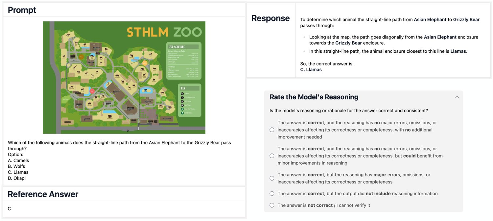
Figure 7 shows the annotation interface for MMRB2 multimodal reasoning tasks. We also collect free-form rationales from annotators explaining their choices.
Pair construction. We construct preference pairs from annotated model responses. For the human-preferred sample of each pair, we select model responses in which all three human annotators agree that the reasoning contains no major errors and the model answer is correct (i.e., all annotators select either the first or second answer choice above). For the non-preferred sample of each pair, we utilize two kinds of responses: Correct answer, incorrect reasoning, where the model answer is correct but all three annotators consider the reasoning to contain major errors (the third answer choice above), and Incorrect answer, with reasoning, where the model answer is incorrect and some form of reasoning is included. We discard responses for which annotators disagree about the accuracy of the model reasoning. For each pair, the two model responses may share the same modality (both text-only or both image+text) or be a combination. No model response is duplicated across pairs. Table 11 shows the breakdown of pairs across modalities and pair types.
| Pair Type | Same Modality | Mixed Modality | |||||
|---|---|---|---|---|---|---|---|
| Text | Image+Text |
|
| ||||
|
112 | 115 | 53 | 44 | |||
|
238 | 238 | 100 | 100 | |||
Here we provide additional details for the newly synthesized tasks in MMRB2.
Text-Heavy Editing. Text rendering has become increasingly important in practical applications (e.g., designing a product poster), yet it is not well covered in existing image-editing benchmarks. To construct this task, we first curate a set of object-centric images. We collect 200 real images from DreamBench++ (Peng et al., 2025), and additionally create 500 synthetic object images using state-of-the-art text-to-image models GPT-Image (OpenAI, 2025c) and Gemini-2.5-Flash-Image (Google DeepMind, 2025a). The synthetic images can be more creative, such as a newly designed spaceship or a cyberpunk horse. We manually inspect all images to ensure that they are of high quality.
Given an object image, we prompt GPT-4o (OpenAI, 2024) to generate an editing instruction that heavily relies on text rendering, using the following prompt:
The final MMRB2 image-editing benchmark contains 114 text-heavy editing examples.
Multi-Image Editing. Recent models such as Gemini 2.5 Flash Image support taking multiple images as input for editing. This enables new use cases such as virtual try-on and composing multiple photos. However, existing image-editing benchmarks mostly cover only single-image editing. We therefore synthesize new multi-image editing examples. Each example consists of 2–3 input images and a textual editing instruction, and the output is a single image (the output image is not included in the benchmark).
We generate the task prompts with our interleaved agents (§C.2), which can produce interleaved text and image responses given arbitrary multimodal prompts. We consider multiple settings for this task. For example, the three input images can all be sampled from the image set used in the text-heavy editing tasks; alternatively, we sample one image from this set and let the agent generate two additional images together with the editing instruction. Each of the 2–3 input images can be either real or synthetic. Below we show the prompt for the setting with one real and one synthetic image: given one real image, the agent is asked to provide another image and an editing instruction:
Altogether, there are 178 multi-image editing examples in the MMRB2 image-editing task, among which 79 have 2 input images and 99 have 3 input images.
All responses are stored in a unified format that supports interleaved text and image content. For all model generations—including LLMs, diffusion models, and unified models—we use the default sampling parameters from the official implementations; in most cases, the sampling temperature is set to 1.0.
Agents. Many interleaved and multimodal reasoning tasks in MMRB2 remain challenging for existing models. For example, we observe that Gemini 2.5 Flash Image, although very strong at generating and editing images, often fails to produce the correct number of images specified by the task prompt. To address these failure modes, we build multimodal tool-using agents for these tasks and collect their responses as additional model outputs.
Specifically, we follow the implementation of Visual Sketchpad (Hu et al., 2024), in which an LLM can write Python code and call tools to generate or edit images. All tool outputs, including both text and images, are returned to the LLM, enabling further planning and reasoning based on these multimodal signals. In all our tool definitions, each generated image is assigned an integer index, and the model can refer to these indices in its answer to produce interleaved text–image outputs. We use GPT-4.1 (OpenAI, 2025a), o3 (OpenAI, 2025d), and GPT-5 (OpenAI, 2025b) as the LLM backbone in these experiments.
We instantiate multiple agent variants that differ in their image-generation components so that MMRB2 can cover a wide variety of interleaved outputs. For GPT-FLUX-agent, we use FLUX.1-dev as the text-to-image tool and FLUX.1-Kontext for image editing (Labs et al., 2025); for GPT-Imagen-agent, we use Imagen-4-Ultra (Google DeepMind, 2025d) as the text-to-image tool and Imagen-3-Edit (Baldridge et al., 2024) as the editing tool; for GPT-GPT-Image-Agent, we use GPT-Image-1 (OpenAI, 2025c) for both text-to-image generation and image editing; and for GPT-Gemini-Agent, we use Gemini 2.5 Flash Image (Google DeepMind, 2025a) as the image tool. The tool definitions are as follows.
For interleaved tasks, we use the following system prompt. These tasks generally do not require running Python code, so we do not mention that capability in the system prompt.
For the multimodal reasoning task, we use the following system prompt.
We set the maximum number of turns for these agents to 15. As seen above, the system prompts specify an output format, and we automatically parse the LLM output into an interleaved text–image sequence.
For the image-generation task, we use the following system prompt for the MLLM-as-a judge.
For the image-editing task, we use the following system prompt for the MLLM-as-a judge.
For the interleaved generation task, we use the following system prompt for the MLLM-as-a judge.
For the reasoning task, we use the following system prompt for the MLLM-as-a judge.
As shown, these prompts are very close to the rubrics that were used for human annotations.
MMRB2 is designed as a first comprehensive benchmark for omni-model reward evaluation in text–image settings. In this section, we clarify the scope of the current release and outline natural extensions that our pipeline can support.
Scope and focus. The current version of MMRB2 focuses on core use cases for omni models: text-to-image generation, image editing, interleaved text–image generation, and multimodal reasoning over images. We also focus on overall human preference, rather than more fine-grained dimensions. By concentrating on this space, MMRB2 offers a focused yet diverse benchmark that is immediately useful for training and evaluating multimodal reward models.
Modalities and task formats. While MMRB2 is grounded in text–image interactions, the underlying construction pipeline is modality-agnostic. The same recipe of prompt curation, multi-model candidate generation, ensemble filtering, and expert preference collection can be applied to additional modalities such as video, audio, or 3D content as these use cases and tools become more standardized. Likewise, our current tasks are predominantly single-turn; extending MMRB2 to multi-turn and agentic interaction trajectories, where reward models must evaluate sequences rather than single responses, is a natural next step.
Data sources and coverage. Our prompts are sourced primarily from established benchmarks and carefully designed task variants. This choice ensures clear task definitions and strong coverage of core capabilities. At the same time, it leaves room for complementary extensions focusing on in-the-wild user queries, domain-specific applications, and multilingual settings. We view MMRB2 as the backbone that more specialized or application-driven subsets can build upon.
Evaluation dimensions. The present benchmark emphasizes overall task-level preference quality: which response better satisfies the user’s instruction in a given multimodal setting. Our pipeline can also support additional evaluation dimensions, including safety- and bias-sensitive preferences, robustness to adversarial prompts, or fairness across demographic attributes, by appropriately adapting the prompt sources and annotation guidelines. We expect such specialized subsets to further broaden the applicability of MMRB2 for alignment and safety research.
Evolving judges and benchmarks. Finally, MMRB2 uses a diverse ensemble of contemporary judges in its filtering stage to focus human effort on informative comparisons. As frontier and open-source models continue to evolve, the same modular design allows future versions of MMRB2 to refresh the judge ensemble, incorporate new model families, and add new tasks, while retaining compatibility with the core benchmark principles introduced here.
Here we show two examples from each task in MMRB2. For each task prompt, there is a Response A and a Response B. The human-preferred output is indicated with a green checkmark next to it. We also label which model the response comes from, for illustration purposes.
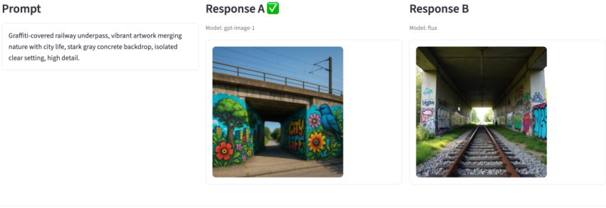
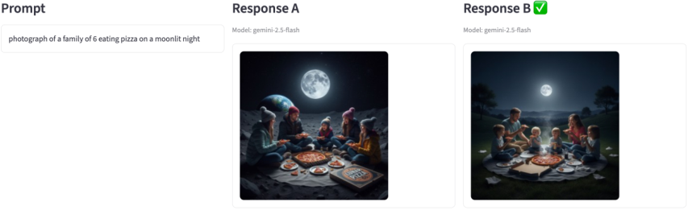
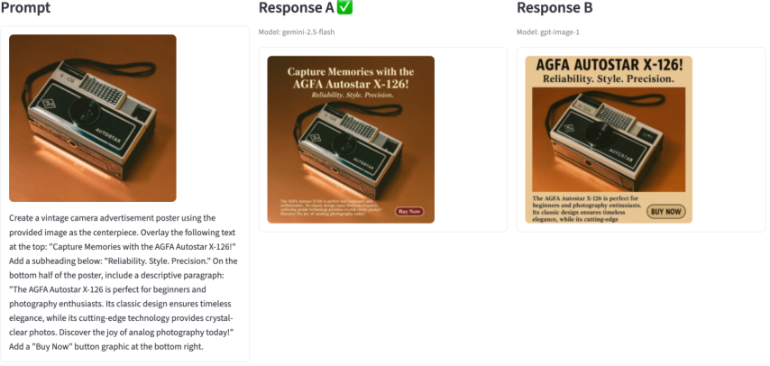
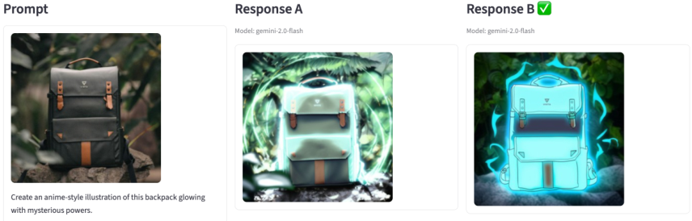
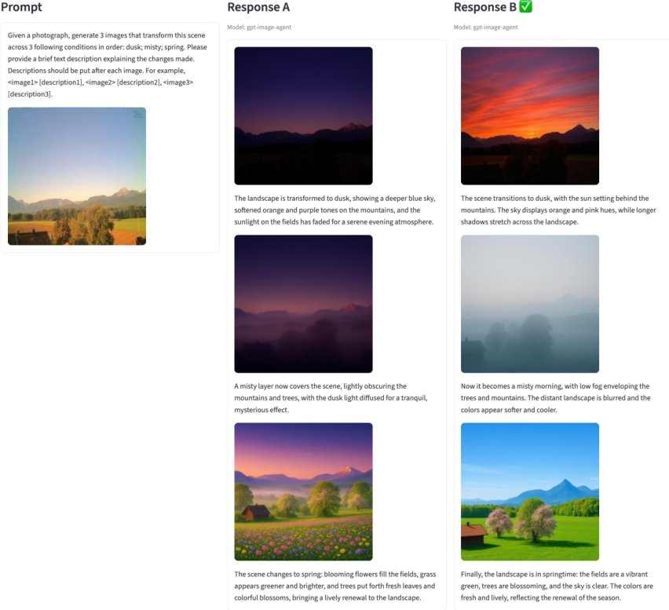
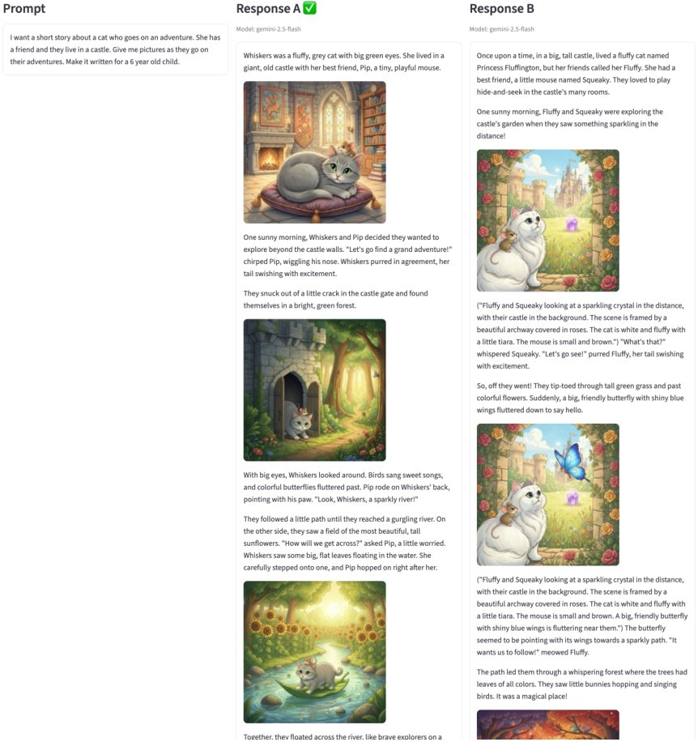
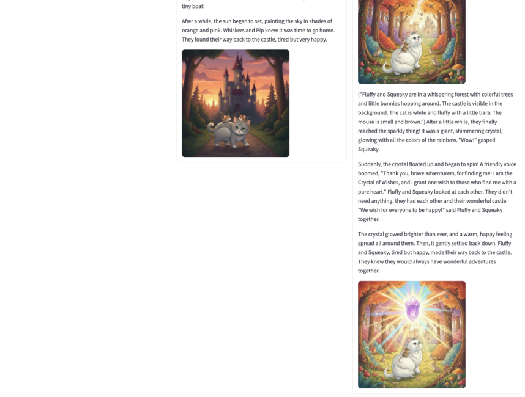
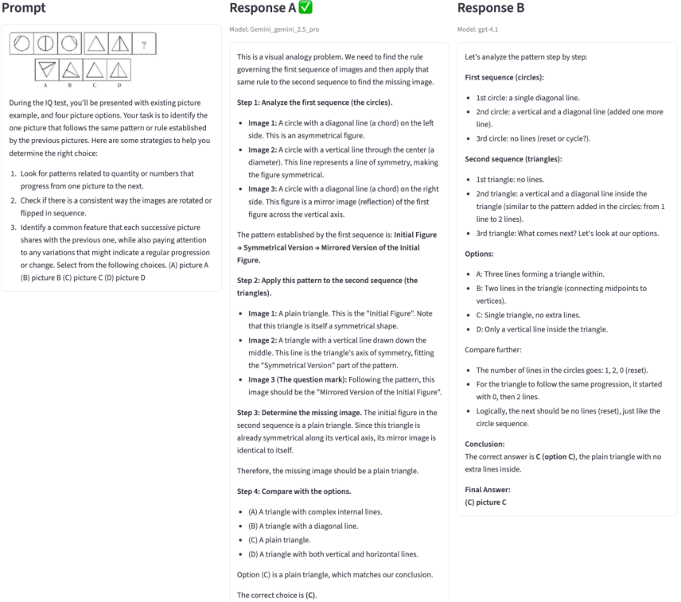
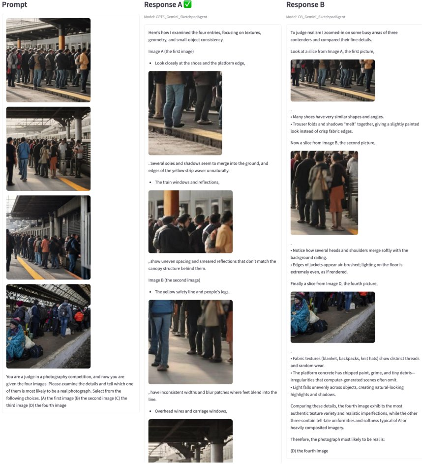
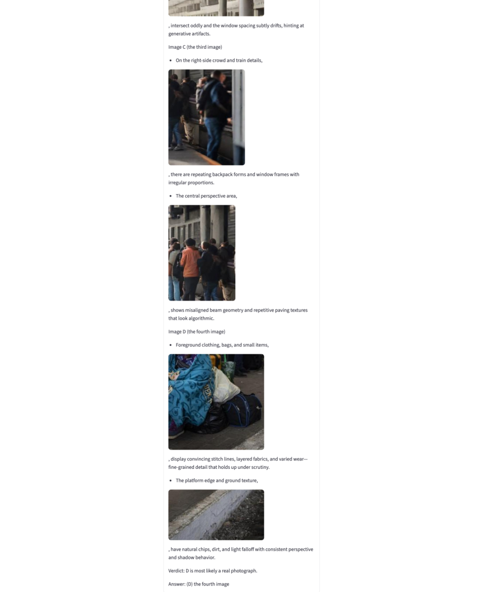